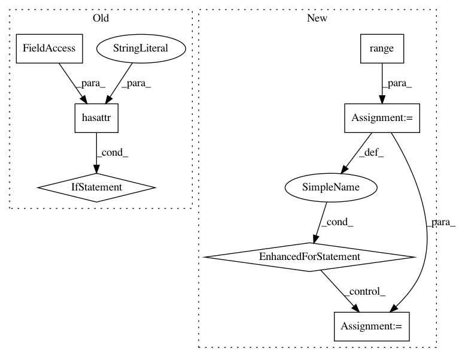

6496c605ad12f3eaac3939804ee8bef0b82a2692,src/skmultiflow/bayes/naive_bayes.py,NaiveBayes,predict,#NaiveBayes#Any#,74
Before Change
A list containing the predicted labels for all instances in X.
if not hasattr(self.classifier, "classes_"):
return [0]
return self.classifier.predict(X)
def predict_proba(self, X):
predict_proba
After Change
r, _ = get_dimensions(X)
predictions = deque()
y_proba = self.predict_proba(X)
for i in range(r):
class_val = np.argmax(y_proba[i])
predictions.append(class_val)
return np.array(predictions)
def predict_proba(self, X):
Predicts the probability of each sample belonging to each one of the
In pattern: SUPERPATTERN
Frequency: 3
Non-data size: 7
Instances
Project Name: scikit-multiflow/scikit-multiflow
Commit Name: 6496c605ad12f3eaac3939804ee8bef0b82a2692
Time: 2019-02-27
Author: aquancva@gmail.com
File Name: src/skmultiflow/bayes/naive_bayes.py
Class Name: NaiveBayes
Method Name: predict
Project Name: allenai/allennlp
Commit Name: adeb1b1278619ff2d74d4fd82825e50a36f95ff4
Time: 2020-03-27
Author: dirkg@allenai.org
File Name: allennlp/data/token_indexers/pretrained_transformer_indexer.py
Class Name: PretrainedTransformerIndexer
Method Name: _add_encoding_to_vocabulary_if_needed
Project Name: scikit-multiflow/scikit-multiflow
Commit Name: 5bf139b5a4312e6bfbe6a196e68fb261ef674368
Time: 2019-02-25
Author: jacob.montiel@gmail.com
File Name: src/skmultiflow/bayes/naive_bayes.py
Class Name: NaiveBayes
Method Name: predict